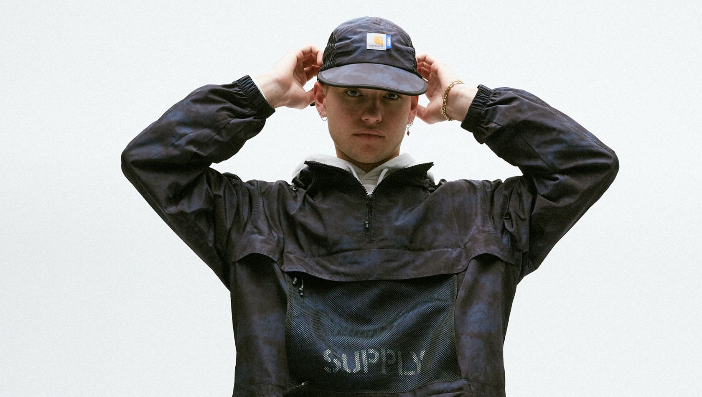

Comming Soon: Carhartt WIP X SUPPLY
14 Sep-2020
For Fall/Winter 2020, Carhartt WIP has collaborated with Australian retailer SUPPLY, marking a partnership that has spanned over two decades. This capsule collection sees SUPPLY reinterpret various iconic Carhartt WIP pieces, while also taking inspiration from vintage trail garments. Several pieces bear a unique tie dye treatment that creates an iridescent, mottled effect when applied to lightweight polyester. There’s also the inclusion of two heavyweight pigment dyed hoodies with tonal embroidery, and a selection of co-branded staples.